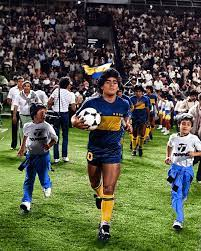
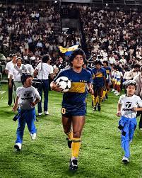

Historia
El Club Atlético Boca Juniors es una entidad deportiva argentina, con sede en el barrio de La Boca, Buenos Aires. Fue fundado el 3 de abril de 1905 por seis vecinos adolescentes hijos de italianos.
El Club Atlético Boca Juniors es una entidad deportiva argentina, con sede en el barrio de La Boca, Buenos Aires. Fue fundado el 3 de abril de 1905 por seis vecinos adolescentes hijos de italianos.
Primera foto del equipo de fútbol de Boca Juniors, en 1906, luego de ganar la Copa Reformista. El equipo aparece con la camiseta original. El lineman a la izquierda de la foto es Juan Brichetto, quien elegiría luego los colores azul y amarillo, y dos veces presidente del club.
Boca rompió el mercado de pases con la contratación de ese crack de Argentinos que ya insinuaba un futuro inmenso y que, además de confesarse hincha de Boca, ya conocía la gloria de ser campeón con el Juvenil en 1979. A la llegada de Diego se sumó la de Miguel Brindisi decisivo para lograr el torneo Metropolitano. Boca ganó 20 partidos, empató 10 y perdió tan sólo cuatro. Y en el medio, en una lluviosa noche del 10 de abril, aplastó 3-0 a River con Maradona como figura principal y un gol inolvidable a Fillol. Aquel título significó el comienzo de la relación entre Boca y Diego. Luego, sería vendido al Barcelona y volvería 14 años después...
 

La tarde del 10 de noviembre de 1996, con un 2-0 a Unión en la Bombonera, marcó el estreno de Juan Román Riquelme con la azul y oro. Ese chico con tanta timidez como pecas se convertiría, con los años, en una leyenda. Tan determinante que le quitó el récord a Silvio Marzolini y se transformó en el futbolista con más partidos en la Bombonera. O en el patio de su casa, como le gusta denominar al estadio en el que fue protagonista de grandes hazañas. Los primeros títulos con Carlos Bianchi, las Copa Libertadores, la final contra Real Madrid en Tokio, los superclásicos, los goles, las miles de asistencias… Riquelme es sinónimo de Boca. “Nací bostero y voy a morir bostero”, repite a menudo. Nadie lo duda.